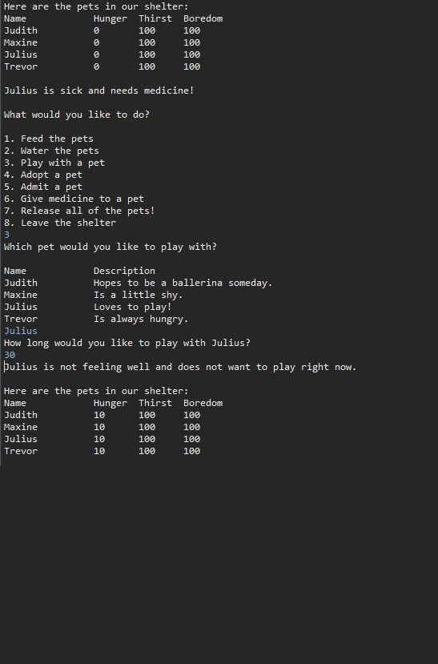

Virtual Pet Shelter
The virtual pet shelter is a collection of virtual pets that can be interacted with. Each virtual pet has attributes for hunger, thirst, and boredom. These attributes can be modified by the user by feeding, watering, or playing with the pets. The pets can be fed or watered all at one time and individual pets can be played with. Hunger, thirst, and boredom increase by 10 with each turn. The three variables are bounded at 0 and 100 to prevent values from being negative or becoming too large.
Additional features:
The virtual pets have a 3% chance of entering a state called "sickness" on each turn. When sick they will not allow the user to play with them instead returning a message stating that they do not feel well and need medicine. Entering option 6 will "give medicine" which flips the sickness state to false allowing the user to once again play with the pet. When sick the value of "sickness" is not randomized to prevent sick pets from exiting the sickness state without user input. Entering option 6 when sickness is false gives a message that the pet does not need medicine.
To add personality to the pets they have a 30% chance of exercising "free will" when the user tries to play with them executing an action other than the user's input. There is a 50% chance that the pet will either eat or drink and the action decreases the associated variable by 25.
The pets can be released all at once and allowed to eat, drink, or play as they see fit. An attribute called randomizedAction which is a double that is randomly generated to be a value between 0-100 is called that determines their next action. There is approximately a 1/3 chance that any action will be performed on any given turn. After each pet performs an action the user is prompted to "put the pets away" and return to the main menu.
Did you know that sometimes crocodiles bite? There is a small chance that the crocodiles will bite.